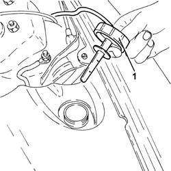
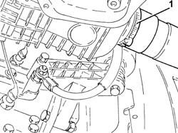
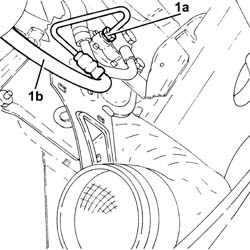
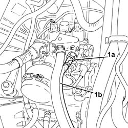
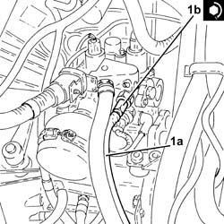
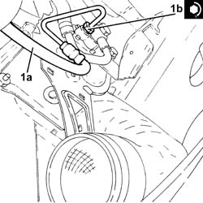

2127C20 PIPE FROMPUMP TO HYDRAULIC SPEED SELECTION ACTUATOR UNIT - R R
- Path
- Procedures > 21 GEARBOX UNIT > 2127 HYDRAULIC TRANSMISSION EXTERNAL LINKAGE > 2127C HYDRAULIC GEAR SELECTION SYSTEM > 2127C20 PIPE FROMPUMP TO HYDRAULIC SPEED SELECTION ACTUATOR UNIT - R R
- Kind
- repair procedure (removal / refitting; the operation number is the code)
- Applies to
- engines: 2.0 JTS; all production periods; only with equipment: Smart gearbox
- Interactive page
- https://sloeber94.github.io/elrnDB-aGt/en/#/125001282
Applies to: engines: 2.0 JTS; all production periods
 Removing
Removing
 Refitting
Refitting- Connect the Examiner diagnostic equipment.
- Select "Alfa Selespeed" on the Examiner.
- Select "Control unit test" on the Examiner and select "Marelli Selespeed automatic transmission" as the system.
- Press "Active diagnosis" on the Examiner and select "Accumulator depressurization".
- Follow the procedure indicated on the Examiner.
- Remove the gear selection electro-hydraulic system hydraulic circuit fluid reservoir cap.
- Drain the gear selection electro-hydraulic system hydraulic circuit fluid reservoir.

Applies to: engines: 2.0 JTS; all production periods
- Loosen the band and disconnect the cold air intake pipe from the air filter.

Applies to: engines: 2.0 JTS; all production periods
- Undo the connector (1a) and disconnect the pipe from the pump to the gearbox electro-hydraulic selection actuator hydraulic unit (1b), pump side.

Applies to: engines: 2.0 JTS; all production periods
- Undo the connector (1a) and disconnect the pipe from the pump to the gearbox electro-hydraulic selection actuator hydraulic unit (1b), hydraulic actuator unit side and remove it.

Applies to: engines: 2.0 JTS; all production periods
Refitting
Removing- Place the pipe from the pump to the gearbox electro-hydraulic selection actuator hydraulic unit (1a) back in its housing, connect it to the hydraulic actuator unit and tighten the connector (1b) to the recommended torque.
Fastening | Component | Ø | Value (daNm) | |
|---|---|---|---|---|
1b | Connector | PIPE FROM PUMP/ACTUATOR UNIT | (Actuator unit side) 1.8 - 2.2 daNm |

Applies to: engines: 2.0 JTS; all production periods
- Connect the pipe from the electro-hydraulic selection gearbox hydraulic actuation unit (1a), pump side and tighten the connector (1b) to the recommended torque.
Fastening | Component | Ø | Value (daNm) | |
|---|---|---|---|---|
1b | Connector | PIPE FROM PUMP/ACTUATOR UNIT | M12 | (Pump side) 1.2 - 1.5 daNm |

Applies to: engines: 2.0 JTS; all production periods
- Connect the cold air intake pipe to the air filter and tighten the band.
- Op. 0010T47 HYDRAULIC SYSTEM FLUID FOR GEARBOX WITH HYDRAULIC SELECTION CHECK LEVEL AND TOP UP IF NECESSARY
- Op. 0010T48 HYDRAULIC SYSTEM FOR GEARBOX WITH HYDRAULIC SELECTION BLEED AIR
- Op. 5530B52 BATTERY DRIP TRAY/SUPPORT - R.R.
- Op. 5530B10 BATTERY - R+R